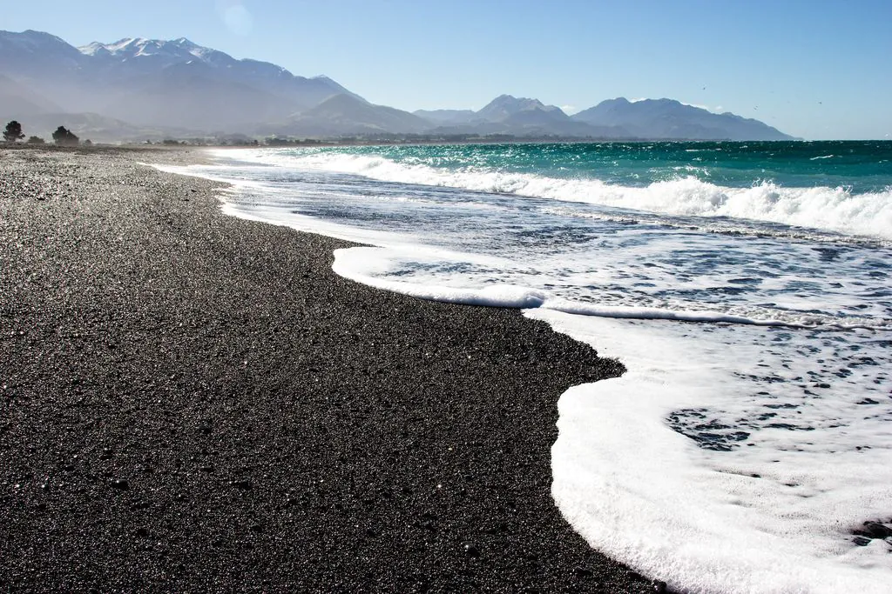

Em 2024,participei de um intercâmbio por meio do governo estadual. Nessa experiência, conheci inúmeras paisagens naturais belissímas, entre elas, um destaque para a praia de pedras vulcânicas, a qual visitava frequentemente. No lugar da areia, a praia contava inteiramente com pedras vulcânicas, a água também possuí coloração diferenciada por ser banhada pelo oceano pacífico, a água se destaca por ser azul límpida e geralmente com temperaturas mais geladas.
